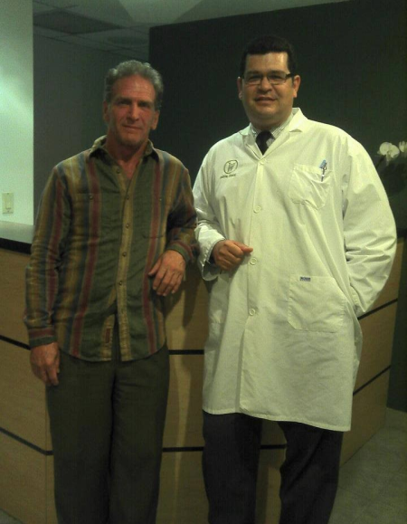
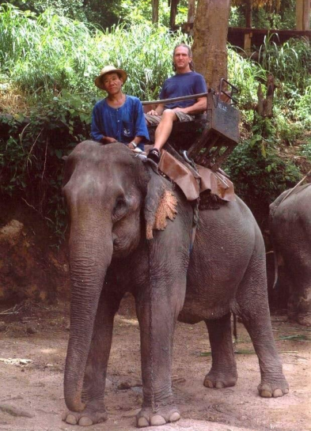
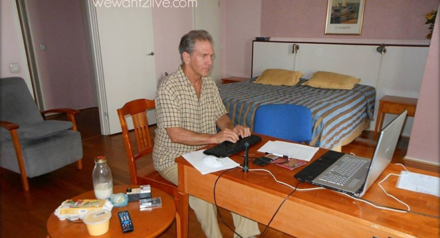

Как Ааджонус Вондерланиц начал есть продукты животного происхождения в сыром виде.

Я отредактировал автоматизированный перевод отрывка из книги Ааджонуса Вондерпланица "Мы хотим жить". С биографией этого человека можно ознакомиться в интернете, а для её более полного изучения можно обратиться к книге "Мы хотим жить" Ниже я приведу цитаты из переведенного отрывка - это история о том, как Ааджонус пришёл к raw meat.
«... я путешествовал по Северной Америке на своем велосипеде и почти три года жил за пределами цивилизации. Иногда я жил с индейскими племенами месяцами. Один очень мудрый туземец посоветовал мне есть сырое мясо. Я отклонил этот совет... »
«Опыт, который изменил меня, был необычным. После двух с половиной лет путешествия на велосипеде я разочаровался. Я стал слишком худым и с каждым днем слабел все больше. Но я не хотел возвращаться к цивилизации с ее загрязнением и отношением к выживанию наиболее приспособленных. Я видел в дикой природе, что только истощенные животные живут по этому правилу. В остальном жизнь на открытом воздухе была мирной.»
«Одной ночью около двенадцати часов меня разбудил койот.»
«После нескольких ночей подряд я понял, что у него была цель будить меня. Но что это было, я не знал...»
«Однажды необычно теплой ночью прошел легкий дождь. Я спал на земле в построенном доме. Мой спальный мешок был расстегнут, и одна нога у меня торчала. Меня разбудил холодный нос, который потёр мою голую ногу сбоку. Это был койот. Я не испугался. Койот умчался прочь и поднялся по крутому склону входа. Он стоял и смотрел на меня. Он смотрел мне прямо в глаза. Он кивнул, словно давая понять, что я должен следовать за ним. Я думал, что сошел с ума. Но он сделал это снова. Я последовал за ним к стае...»
«Мы проползли ярдов триста против ветра. Затем он помчался в сторону, зигзагами по ветру. Он смеялся как сумасшедший. Я слышал, как другие начали выть и смеяться издалека. Они приближались к одинокому койоту, точно сужающийся полукруг.
Я побежал посмотреть, что происходит. В полукруг попался кролик-джек. Он двигался зигзагами и прыгал. Но он был пойман вторгающимся хором койотов. Кролик остановился, парализованный...»
«Самка койота взяла окоченевшего кролика и сломала ему шею. Он болтался у нее в зубах. Другой койот впился в кожу между передними лапами кролика и разорвал его туловище. Она принесла мне кролика. Она уронила его мне на босые ноги. Кролик был горячим и истекал кровью. Я стал ослаблен. Все одиннадцать из них стояли и смотрели на меня. Мне все время приходила мысль: это то, что тебе нужно, бери и ешь».
«Я посмотрел на койотов и сказал: «Не знаю, ребята, я шесть лет не ел мяса». Тогда мне пришла в голову идея, что эти койоты пришли сюда, чтобы помочь мне быстро закончить мою жизнь... »
«Я поднял его. Я откусил. Я заставил себя сглотнуть...»
«... я вернулся в свой каменный дом, чтобы умереть. Я думал, что яды начали действовать.»
«Я проснулся на следующее утро после лучшего сна в моей жизни. Сырое мясо кролика сделало меня сильным еще на три дня. Так я стал есть сырое мясо. Я нашёл недостающее звено в своем здоровье! Я убивал и ел гремучих змей и птиц. Я трудился на ферме за яйца, цыплят и сырое козье молоко. Мои мышцы развивались легко. Несколько месяцев спустя я вернулся в Лос-Анджелес, чтобы рассказать о своем открытии. Все думали, что я сошёл с ума ».
Я верю в эту историю, хоть она на мой взгляд очень романтичная, но я в неё верю. Ведь такие люди, как Ааджонус, уже дали мне очень много и не взяли взамен практически ничего... Они дали мне бешеную энергию от оптимальной диеты, максимально поддерживающей каждую клетку моего тела. Они избавили меня от тяжести после еды, от тумана в голове, от усталости. Я теперь могу делать намного больше в этой жизни, будто мне поменяли батарейки.